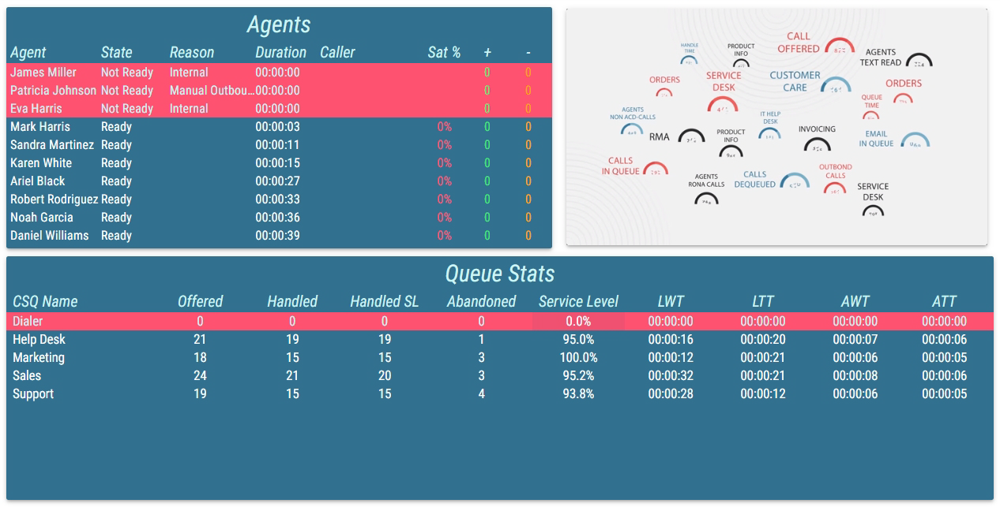
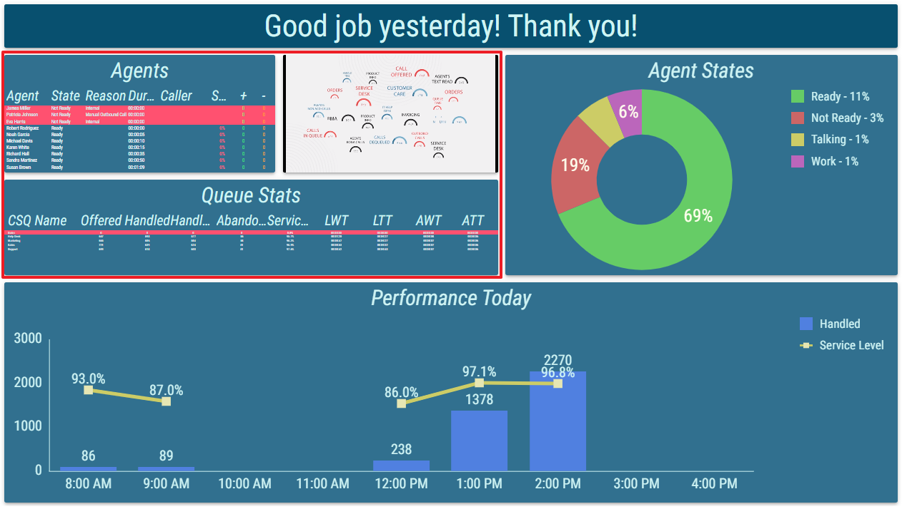
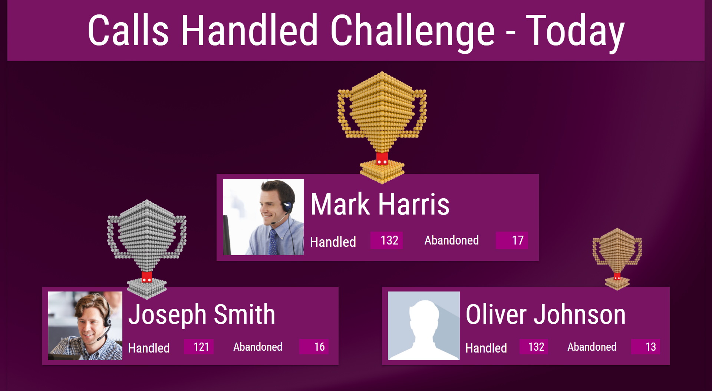
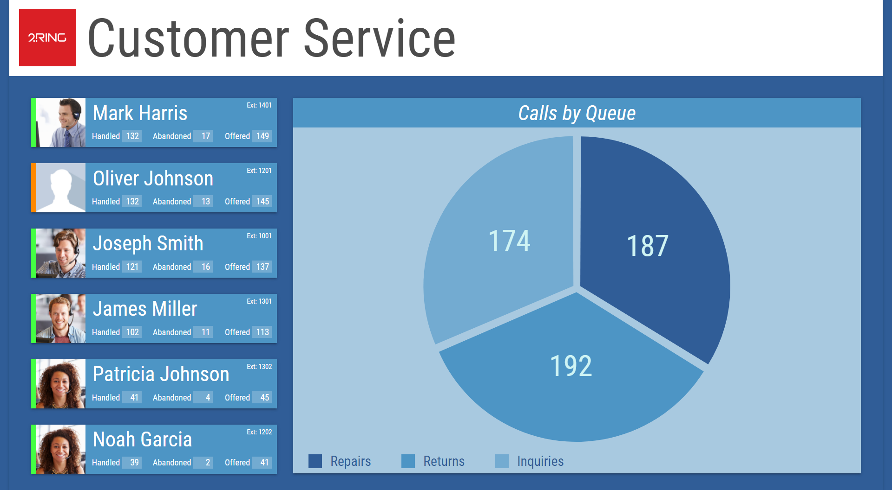
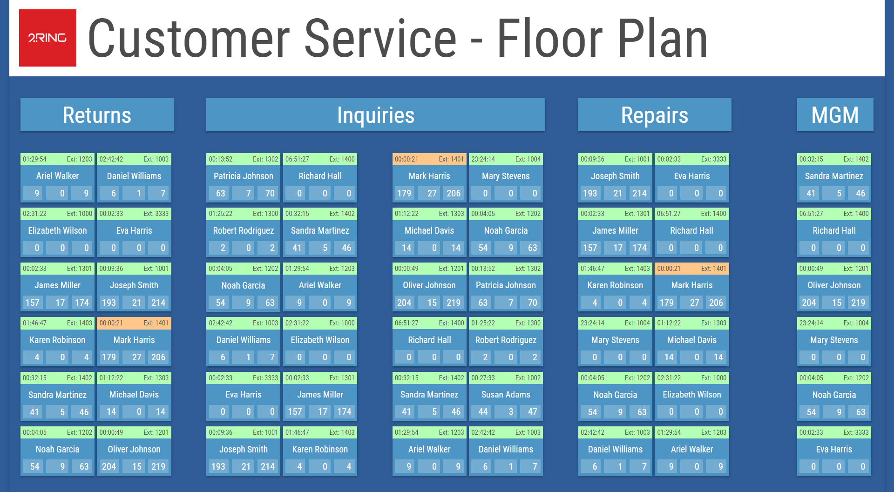
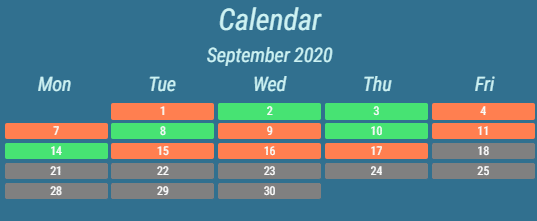
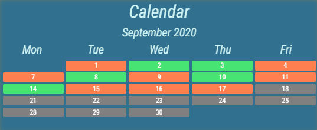
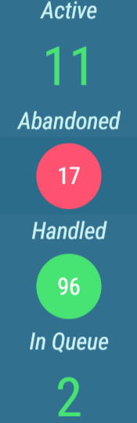

Container Based Segments¶
Nested Layout¶
Another Layout can be displayed, using the Nested Layout segment type. The exact copy of a Layout is displayed inside of the segment, that is fully interactable.
Nested Layouts allow reusing of repeatedly used segment or group of segments. Such segment(s) can be configured only once and easily modified in the future.
Figure 1: Layout
Figure 2: The Layout from previous figure, nested inside another Layout
The Theme of the root Layout is applied also to all nested Layouts.
For more information about editing this segment, see Nested Layout chapter.
Nested Widget¶
Nested widget is very similar to a nested layout. The difference is that while nested layout defines its data itself, nested widget receives the data to display from the layout it is placed in. It is very suitable to host multiple instances of a nested widget within a single layout, each displaying different data in the same form. This allows creation of floor plans, top charts and other graphically intensive visualizations.
Figure 1: Widget
Figure 2: Widget
Figure 3: Widget
For more information about editing this segment, see Nested Widget chapter.
Sequence¶
A Sequence contains its own items. These items are essentially the same as Layout’s segments. However a Sequence displays only one of its items at a time. The items are automatically alternated through at configured interval.
Sequence is used to display segments, that don’t need to be visible all the time thus saving space on the Layout for other, more important segments.
Figure 1: Sequence with smooth transition
Figure 2: Sequence without smooth transition
For more information about editing this segment, see Sequence chapter.
Ticker¶
A Ticker contains its own items. These items are essentially the same as Layout’s segments. Ticker displays its items gradually in a scrolling fashion. The scrolling speed and direction can be configured.
Ticker is used to display segments, that don’t need to be visible all the time thus saving space on the Layout for other, more important segments.
Figure 1: Ticker
Figure 2: Vertical Ticker
A Ticker is especially useful, when containing a Banner. Sometimes Banner’s content is too long to be comfortably displayed. Putting such Banner into a Ticker enables the full display of longer texts, without taking up unnecessary space in the Layout.
Figure 3: Ticker with Banner
For more information about editing this segment, see Ticker chapter.